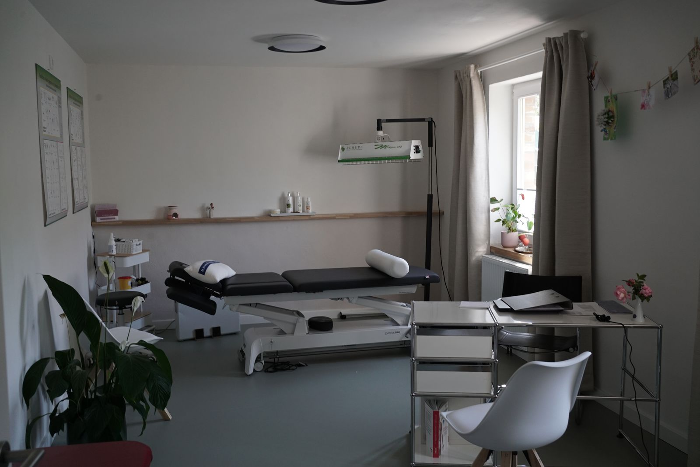
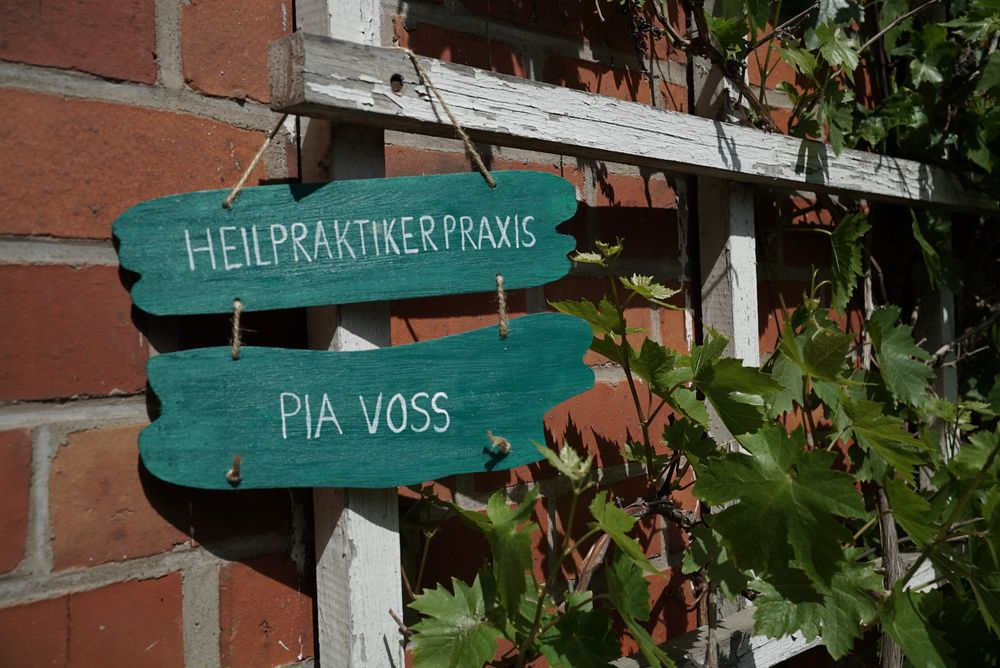

Moin und Herzlich Willkommen
in der kleinen Landpraxis für
ganzheitliche Therapie in Fitzen.
Geboren und aufgewachsen an der Ostsee absolvierte ich 2003 meine Ausbildung als Physiotherapeutin in Lübeck. Nach langjähriger Tätigkeit in verschiedenen Praxen in Norddeutschland, wollte ich ganzheitlicher arbeiten und bin seit 2018 als Heilpraktikerin tätig. Den Wunsch beides zu verbinden und den Menschen als Einheit zu behandeln ist mir durch die Gründung der Praxis jetzt möglich. Durch die Kombination und den vielfältigen Fortbildungen möchte ich ihren Körper wieder in die Lage versetzten, seine natürlichen Heilungskräfte und Ressourcen zu nutzen.
Die Praxisräume wurden in die alten Stallungen des Krahnhofes errichtet. So sind freundliche helle Räume entstanden, die zum wohlfühlen einladen.


Bitte auf dem Hof und nicht am Strassenrand parken.
Meine Praxis ist spezialisiert auf akute und chronische Schmerzen am Bewegungsapparat. Für die Diagnostik und Behandlung der funktionellen Störungen nehme ich mir Zeit. Unser Körper versucht ständig, sich aus eigener Kraft zu optimieren und zu heilen, jedoch gelingt ihm das an mancher Stelle nicht mehr allein. Ich helfe durch die verschiedenen Therapieformen dem Körper dabei, zu seiner bestmöglichen Funktion zurückzufinden. Ergänzt wird dies durch Anleitungen zur funktionellen Kräftigung der entsprechenden Körperregionen.
Wenn Sie als neuer Patient in die Praxis kommen, steht vor einer Behandlung eine gründliche Anamnese (Befunde, Medikamentenpläne, MRT oder Röntgenbilder bitte mitbringen). Es erfolgt eine ausführliche Befunderhebung nach schulmedizinischen und naturheilkundlichen Gesichtspunkten. Im Anschluss besprechen wir gegebenenfalls erforderliche weitere diagnostische Maßnahmen und beginnen dann mit der angezeigten Therapie. Um eine Orientierung zu geben oder sich über eine bestimmte Therapieform zu informieren, sind ein Teil meiner Behandlungsformen vorgestellt. Die Erstbehandlung dauert ca. 50 min.
Die von mir angebotenen Behandlungen sind in der Regel Privatleistungen und werden nicht von den gesetzlichen Krankenkassen übernommen.
Das Honorar richtet sich nach Art und Umfang der Behandlung sowie dem zeitlichen Aufwand. Private Krankenversicherungen, Zusatzversicherungen oder Beihilfestellen erstatten die Kosten je nach individuellem Tarif ganz oder teilweise. Die Abrechnung erfolgt auf Grundlage der Gebührenordnung für Heilpraktiker (GebüH 1985) bzw. für Physiotherapeuten (GbüT) und orientiert sich am jeweiligen Höchstsatz. Bitte klären Sie die Details vorab mit Ihrer Versicherung.
Bei Fragen melden Sie sich gerne bei mir.
Pia Voß
Heilpraktikerin und Physiotherapeutin
Dorfstr. 20, 21514 Fitzen
04155 826 89 86
Gesetzliche Berufsbezeichnung: Heilpraktikerin/Physiotherapeutin
(verliehen in der Bundesrepublik Deutschland)
Gesundheitsamt Ratzeburg
Barlachstraße 4, 23909 Ratzeburg
www.kreis-rz.de
Gesetz über die berufsmäßige Ausübung der Heilkunde ohne Bestallung
(Heilpraktikergesetz) und Durchführungsverordnung.
Im Internet nachzulesen unter:
http://www.gesetze-im-internet.de/heilprg/index.html
Die Continentale
Continer-Allee 1, 44269 Dortmund
Die Ausübung der Heilkundliche ist von der Umsatzsteuer nach gemäß § 4 Nr.14 UStG befreit.
Für die Online-Terminvereinbarung verlinken wir auf die Website von Terminmanagement.de. Erst durch Anklicken des Links über den Knopf "Termin vereinbaren" verlassen Sie unsere Website. Ab diesem Zeitpunkt erfolgt die Datenverarbeitung durch den Anbieter der Terminbuchungsseite nach dessen eigenen Datenschutzbestimmungen. Sofern Sie über die Terminbuchungsseite einen Termin vereinbaren, können insbesondere Kontakt- und Termindaten verarbeitet werden. Bitte beachten Sie die Datenschutzhinweise des Anbieters unmittelbar auf der Terminbuchungsseite.
von Anette Remler